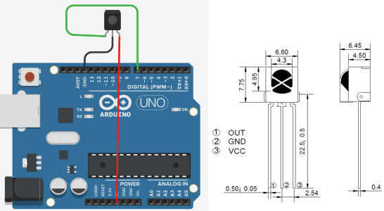

MANDO
A DISTANCIA POR
INFRAROJOS

MANDO A DISTANCIA POR IR
Ahora toca algo muy chulo, manejar el encedido de
leds,
mediante un mando a distancia,
esto es una tarea fácil, gracias a la utilización de libreria.
La librería a utilizar es
IRremote, esta
biblioteca vale tanto para recibir IR como para enviar IR.
Antes de utilizar esta biblioteca que ha
sido
realizada por la comunidad de arduino y que tenemos que importar,
encotre otra librería NERIRrec pero no conseguí compilar.
Para añadir una una librería,
simplemente es
poner la carpeta descargada sobre la carpeta arduino/libraries creada
por arduino.
Aunque se recomienza instalar la carpeta descargada en formato
zip mediante el menu Sketch/importar librería, ya
que ella
se encarga de comprobarla e instalarla en la carpeta anteriormente
menciona.
Al instalar la librería viene con
programas ejemplo
que nos sirve para comprobar el funcionamiento de
sofware y
hardware instalado.
Conocer
mas acerca del protocolo NEC
En mi caso probe el ejemplo que me
imprimia atraves
de monitor serial me aparecia el codigo hexadecimal enviado por un
mando a distancia de IR, lo unico que modifiqué el pin donde conecté el
receptor IR.
El sketch del archivo/ejemplos/Arduino_IRremote_master/IRrecvDemo
/*
*
IRremote: IRrecvDemo -
demonstrates receiving IR codes with IRrecv
* An IR
detector/demodulator must be connected to the input RECV_PIN.
*
Version 0.1 July, 2009
*
Copyright 2009 Ken
Shirriff
*
http://arcfn.com
*/
#include
<IRremote.h>
int RECV_PIN = 7;//
mi
receptor IR esta conectado al pin 7
IRrecv
irrecv(RECV_PIN);
decode_results
results;
void setup()
{
Serial.begin(9600);
irrecv.enableIRIn(); //
Start the receiver
}
void loop() {
if
(irrecv.decode(&results)) {
Serial.println(results.value, HEX);
irrecv.resume(); // Receive the next value
}
}
con este programa he obtenido el codigo de mandos a
distancia de mi casa.
dvd lauson
POWER 807F807F
MUTE 807F48B7
exit 807F6897
OK
807FA857 TECLA 8
ON/OFF
40BF807F CH-
MUTE 807F48B7
CH-
40BF58A7 CH
SET
1
40BF00FF
PLAY/PAUSE
2
3 807F609F
40BF609F +
4
40BF20DF EQ
5
6
40BF50AF NEXT
7 807F10EF
40BF10EF 0
8 807FF00F
9
40BF708F 3
0
FAV
807FC23D
RWD
SUB 807F906F
MENU 807FDA25
EPG 807F5AA5
INFO 807F728D
<FLECHA 807F42BD
>FLECHA 807F827D
ALT 807F7887
LIST 807F02FD
RWD Y RECORD 807FAA55
FWD TEXT 807F6A95
AUDIO
807FEA15
PAUSE
807F08F7
TECLA 4
ZOOM
807F8A75
PLAY TV/RADIO 807F4AB5
USB/MOVE 807FCA35
A-SCAN /A-TIME 807F2AD5
VOL+
40BFB04F 2
VOL -
40BF28D7 7
y de un mando de video que tenia por hay.
funcion on off 141EBE
audioselect 160E9F
eject
16FE90
1 17EE81
2 161E9E
3 151EAE
4 171E8E
5 149EB6
6 169E96
7 159EA6
8 179E86
9 145EBA
0 165E9A
subir canal 142EBD
bajar canal 144EBB
menu 16AE95
display
158EA7
tape counter reset 17CB83
tape cou memory 14AEB5
play 154EAB
rew 14CEB3
fwd 148EB7
stop 14EEB1
record
156EA9
speed
377C88
pause
174E8B
quick-find 174E8B
search time 15CEA3
search index 178E87
El siguiente programa es una modificación de uno decargado de internet
para controlar un led de mi arduino.
//incluimos la librería
de IR
//los valores del mando son los cuatro ultimos digitos del HEX pasado a
decimal
#include <IRremote.h>
#include <IRremoteInt.h>
//poner IR en marcha
int RECV_PIN = 7; //Definimos el pin donde tiene que esta el IR
IRrecv irrecv(RECV_PIN);
decode_results results;
//declaramos contante
int pinLed=12;
//declaramos variable
int ValorIR=0; //declramos variable almacen valor ir
int estadoLed=0;
//Preparamos el setup
void setup()
{
Serial.begin(9600); //Ponemos el puerto serie a 9600
irrecv.enableIRIn(); // el receptor ir en marcha
pinMode(pinLed, OUTPUT); //definimos el pin del led como de salida
}
//definimos una función llamada "leerIR" esto nos ayuda a que en el
futuro podamos reutilizarla.
//no tiene parámetros de entra y devuelve un INT
int leerIR(){
if (irrecv.decode(&results)) { // si recibe señal IR
int lectura = results.value; //Guarda el valor de la señal en la
variable lectura
irrecv.resume(); // Recive siguiente valor IR
Serial.println(lectura);
return lectura; //devuelve lectura
}
}
void loop() {
ValorIR=leerIR(); //asignamos a esa variable el valor que devuelve lerIR
if (ValorIR==7870){ //comprobamos el codigo recibido
if (estadoLed==0){ //comprobamos si el led está encendido
digitalWrite(pinLed,HIGH); //lo encendemos
estadoLed=1; //marcamos como que está encendido
}
else{ //si no está apgado es que esta endendico
digitalWrite(pinLed,LOW); //lo apagamo
estadoLed=0; //marcamos como apagado
}
}
}
y un mejora donde añadimos el control de varios led con el mando a
distancia del video.
//incluimos la
librería de IR
//los valores del mando son los cuatro ultimos digitos del HEX pasado a
decimal
#include <IRremote.h>
#include <IRremoteInt.h>
//poner IR en marcha
int RECV_PIN = 7; //Definimos el pin donde tiene que esta el IR
IRrecv irrecv(RECV_PIN);
decode_results results;
//declaramos contante
int ledverde=12;
int ledamarillo=11;
int ledrojo=10;
int ledverde2=9;
//declaramos variable
int ValorIR=0; //declramos variable almacen valor ir
int estadoLed=0;
int estadoLed4=0;
//Preparamos el setup
void setup()
{
Serial.begin(9600); //Ponemos el puerto serie a 9600
irrecv.enableIRIn(); // el receptor ir en marcha
pinMode(ledverde,OUTPUT);
pinMode(ledamarillo,OUTPUT);
pinMode(ledrojo,OUTPUT);
pinMode(ledverde2,OUTPUT);
}
//definimos una función llamada "leerIR" esto nos ayuda a que en el
futuro podamos reutilizarla.
//no tiene parámetros de entra y devuelve un INT
int leerIR(){
if (irrecv.decode(&results)) { // si recibe señal IR
int lectura = results.value; //Guarda el valor de la señal en la
variable lectura
irrecv.resume(); // Recive siguiente valor IR
Serial.println(lectura);
return lectura; //devuelve lectura
}
}
void loop() {
ValorIR=leerIR(); //asignamos a esa variable el valor que devuelve lerIR
if (ValorIR==7870){ //comprobamos el codigo recibido
if (estadoLed==0){ //comprobamos si el led está encendido
digitalWrite(ledverde,HIGH); //lo encendemos
estadoLed=1; //marcamos como que está encendido
}
else{ //si no está apgado es que esta endendico
digitalWrite(ledverde,LOW); //lo apagamo
estadoLed=0; //marcamos como apagado
}
}
if (ValorIR==7822){ //comprobamos el codigo recibido numero 4
if (estadoLed4==0){ //comprobamos si el led está encendido
digitalWrite(ledverde,HIGH); //lo encendemos
digitalWrite(ledamarillo,HIGH); //lo encendemos
digitalWrite(ledrojo,HIGH); //lo encendemos
digitalWrite(ledverde2,HIGH); //lo encendemos
estadoLed4=1; //marcamos como que está encendido
estadoLed=1; //cambia el estado del verde que funciona
independientemente tb
}
else{ //si no está apgado es que esta endendico
digitalWrite(ledverde,LOW); //lo apagamo
digitalWrite(ledamarillo,LOW); //lo apagamo
digitalWrite(ledrojo,LOW); //lo apagamo
digitalWrite(ledverde2,LOW); //lo apagamo
estadoLed4=0; //marcamos como apagado
estadoLed=0; //marcamos como apagado
}
}
}